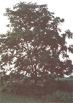
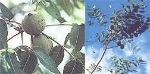

It's mighty hard to find a better-tasting nutmeat... or one that's more difficult to get at!
It's expensive to buy shelled black walnuts in a grocery store ...but if you've ever tackled the difficult task of cracking these nuts, you can at least understand why they cost so much. Lately, though, thanks to a tip from my good friend and neighbor Dean Balcomb, I've become very proficient at producing large, "fancysize," pieces of that wonderful gourmet treat in a minimum amount of time and without a whole lot of effort.
YOU'D BETTER WATCH OUT: THEY STAIN!
Many folks who become downright ecstatic upon discovering these lovely green fruits freshly fallen from a limb find that-upon setting about the task of husking all of those spheres of hidden de lights-their enthusiasm quickly fades. Husking is best accomplished promptly after gathering and should always be done with gloves on. Otherwise, uncovering just a few black walnuts bare-handed will leave brown stains that nothing except time can erase.
To do the job efficiently, use a hammer to smack the husk sharply, and then peel the nut out. (An oily black appearance beneath the husk usually means that the nut has been lying on the ground too long and has become a nursery for maggots.) Next, discard the husks and toss the nuts into a bucket of water, throwing away any that float. Then drain your treasures and spread them in a single layer on newspapers in a warm, dry, and airy environment. (I allow the nuts to cure for at least a month, checking periodically for dryness and making sure that any moldy ones are tossed away.)
GETTING TO THE HEART OF THE MATTER
Cracking the nuts is, of course, the most time-consuming step. However, by using a mounted vise I've managed to cut the chore to a minimum without sacrificing even a frag ment of the delicious nutmeats (which can, by the way, bring from $7.00 to $12.00 per pound!).
Just place a nut in the vise with its "seams" parallel to the vise jaws. Then tighten the vise until the shell splits open. If you need extra leverage, you can simply slip a length of pipe over the vise handle. Using a rubber mallet to tap the handle until it's tight may also be helpful.
Once the nut has cracked, you can dislodge the meat by shaking or prying it loose. With this method, the nutmeats will usually come out in four neat quarters ...nothing like the black walnut "dust" offered in supermarkets. Store the nuts in the refrigerator or freezer until you need them.
A word of caution: It's very important that you wear safety glasses when breaking black walnuts open; the shells can crack with an explosive force that sends sharp fragments flying.
Now, don't you think it's about time to get cracking?
EDITOR'S NOTE: For more on foraging nuts, turn the page!
|
 FAR LEFT: This young black walnut tree illustrates the classic ""spreading"" nut tree shape. ABOVE: Immature walnuts. The thick green husk is a good source of natural dye, as you'll discover when you're shucking it off. LEFT: With the leaves of the tree ready to drop, these nuts are just about ripe and will soon be littering the ground ...to the delight of foragers and squirrels. |
 |
|